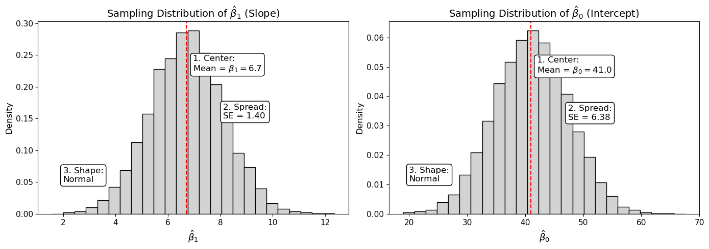

Scatterplots visually represent the relationship between two quantitative variables, illustrating how they vary together. Key points:
The explanatory variable (\(X\)) is plotted on the X-axis, while the response variable (\(Y\)) is on the Y-axis.
Each dot represents an observation.
Patterns to look for include:
Positive or negative linear relationships
Curved patterns (e.g., parabolic)
Logarithmic or sinusoidal relationships
Random scatter (no clear relationship)
Interpreting Correlations
Square of Correlation Coefficient (\(r^2\))
Represents shared variance
Example: \(r = 0.8\) implies \(r^2 = 0.64\), meaning 64% of variability in \(Y\) is explained by its linear relationship with \(X\)
Significance
When \(r = 1\), there is a perfect positive linear relationship.
When \(r = -1\), there is a perfect negative linear relationship.
When \(r = 0\), there is no linear relationship.
Key Notes
The sign of \(r\) indicates the direction of the slope (positive or negative):
A negative correlation reflects an inverse relationship.
Positive and negative correlations of the same magnitude have the same shared variance.
Changing sample size does not affect \(r\).
Correlation does not imply causation.
Correlation Analysis
Key Formula
\[
r = \frac{\sum_{i=1}^n (X_i - \bar{X})(Y_i - \bar{Y})}{(n-1) S_x S_y} = \frac{\sum_{i=1}^n Z_x Z_y}{n-1}
\] where \(n\) = number of \((x, y)\) pairs.
Why Plot the Data First?
Use scatterplots to visually check for linear relationships, outliers, or curved patterns (e.g., Anscombe’s dataset). Then calculate the correlation to assess the strength of the relationship.
Outliers can significantly distort \(r\), regression slopes, and intercepts, as these measures are not resistant to extreme values.
Factors Affecting the Magnitude of \(r\)
Bivariate Outliers: Can inflate or deflate \(r\).
Distribution Shape: Differences in variability between \(X\) and \(Y\) can distort \(r\).
Range Restrictions: Restricted ranges of data can misrepresent \(r\).
Combining Groups: Mixed groups may lead to misleading correlations. Averages are less variable, so the correlation will be stronger.
Facts About \(r\)
\(r\) estimates the population correlation, \(\rho\).
Measures the strength of a linear relationship between two variables.
Is always between \(-1\) and \(1\).
Is unitless and unaffected by changes in measurement scales.
Assumes both variables are quantitative.
Assumes bivariate normal distribution (for any value of \(y\), \(x\) has a normal distribution, and vice versa).
Is not resistant to outliers.
Interpreting \(r^2\), the Coefficient of Determination
Definition
\(r^2\), also known as the coefficient of determination, represents the proportion of variability in \(Y\) that is explained by its linear relationship with \(X\).
If \(r^2\) is calculated from a sample, it serves as an estimate of how well changes in \(X\) explain variation in \(Y\).
For example, an \(r^2\) of 0.75 means that 75% of the variability in \(Y\) can be attributed to its linear relationship with \(X\), while the remaining 25% remains unexplained by the model.
This measures how much of the total variance from the equal means model is explained by the regression model.
Correlation Doesn’t Equal Causation
Association (strong correlation) is not causation.
The only way to make cause-and-effect statements is with a randomized experiment.
Keys to Remember
The correlation coefficient assumes equal standard deviation.
Don’t confuse fewer data points with smaller standard deviation.
The range of the data is a proxy for the spread. Knowing the particular \(X\) value reduces the variation.
Data Exploration
Always plot the data using scatterplots for two quantitative variables.
Look for overall patterns: positive/negative, strong/weak, curved/linear.
If the relationship is linear, calculate a numerical summary.
Plot a regression line for interpretation.
Least Squares Regression
Origin of Regression
The term regression originates from Francis Galton’s phrase “Regression toward mediocrity,” referring to regression to the mean.
A regression line is a straight line that describes how a response variable (\(Y\)) changes as an explanatory variable (\(X\)) changes. It is used to predict the value of \(Y\) for a given \(X\).
Key Points
One Best-Fit Line:
There is only one best-fit line per dataset.
This line minimizes the distance between observed points and the line (residuals).
Residuals: The difference between the observed value (\(y_i\)) and the predicted value (\(\hat{y}_i\)), calculated as \(\text{Residual} = y_i - \hat{y}_i\). Residuals measure the error in prediction.
The best-fit line (slope and y-intercept) minimizes the sum of squared residuals (SSR).
All the residuals would be zero for a perfect fitting line.
Relation to Correlation:
\(\hat{b_1}\) (slope) and \(r\) always have the same sign.
The least squares regression line always passes through \((\bar{X}, \bar{Y})\).
Choice of Variables:
Regression equation depends on the designation of explanatory and response variables.
With correlation you can flip \(X\) and \(Y\) but not with regression.
Subpopulations:
In simple regression with a single explanatory variable, each value of the explanatory variable corresponds to a subpopulation of responses.
Regression describes the relationship between the means of these subpopulations and the explanatory variable.
A regression line predicts \(Y\) from \(X\): \[
Y = \beta_0 + \beta_1 X
\]
Interpretation
Slope (\(\hat{\beta}_1\)), coefficient of \(X\):
Represents the predicted change in \(Y\) for a one-unit increase in \(X\).
“Rise over run”: \(\frac{\Delta Y}{\Delta X}\)
Each one-unit increase in \(X\) is associated with an estimated increase of \(\beta_1\) units in the predicted value of \(Y\).
Example: A slope of \(6.708\) means a one-hour increase in study time predicts an average score increase of 6.708 points.
Intercept (\(\hat{\beta}_0\)), constant term:
Represents the predicted value of \(Y\) when \(X = 0\).
Example: An intercept of \(40.993\) means a predicted score of 40.993 when no study time is recorded.
Extrapolation
Predictions are only valid for \(X\) values within the range used to build the model.
Extrapolation: Predicting values of \(Y\) for \(X\) outside the observed data range. Use cautiously, as extrapolated predictions may not reliably represent real-world behavior, and clearly communicate that the results are extrapolated.
Assumptions for Linear Regression
Normality, conditional on \(X\):
The response variable is normally distributed for each value of \(X\).
Linearity:
The relationship between the means of \(Y\) for each value of \(X\) is linear. The mean of the normal distributions follow a linear pattern.
\(m_{Y|X} = b_0 + b_1X\): Mean of \(Y\) as a function of \(X\) or for a specific value of \(X\).
\(s_{Y|X} = s\): Standard deviation of \(Y\) as a function of \(X\), assuming equal standard deviation across \(X\) values.
Hand-Calculated Pearson’s \(r\)
We can calculate the sample linear correlation coefficient, \(r\), using either of the following equivalent formulas: \[
r = \frac{\sum_{i=1}^n (X_i - \bar{X})(Y_i - \bar{Y})}{(n - 1) S_X S_Y} = \frac{\sum_{i=1}^n Z_{X_i} Z_{Y_i}}{n - 1}
\] where:
\(Z_{X_i} = \dfrac{X_i - \bar{X}}{S_X}\)
\(Z_{Y_i} = \dfrac{Y_i - \bar{Y}}{S_Y}\)
Example: Calculating \(Z\)-scores
To compute \(Z_{X}\) for the first observation: \[
Z_{X_1} = \frac{1 - 3.923}{2.397} = -1.220
\]
To compute \(Z_{Y}\) for the first observation: \[
Z_{Y_1} = \frac{34 - 67.308}{19.564} = -0.578
\]
Therefore, the sample correlation is: \(r = 0.8217\)
Scatterplot of Test Score by Study Hours
After plotting the data, we do not see evidence of:
Outliers
Unequal standard deviations
A curved relationship
Since a linear relationship appears appropriate, we proceed with correlation analysis.
The correlation coefficient is: \(r = 0.8217\)
This value provides evidence of a strong positive linear association between study hours and test score.
Scatterplot of test score vs. study hours with best-fit line.
Pearson’s \(r\) and the Six-Step Hypothesis Test
1. Hypotheses (Testing \(\rho\), the Population Correlation Coefficient)
\(H_0\): \(\rho = 0\) (no linear correlation in the population)
\(H_a\): \(\rho \ne 0\) (a linear correlation exists in the population)
2. Critical Value (From a t-Distribution)
\(\pm t_{0.975, 13 - 2} = \pm 2.201\)
Computing the critical value:
In SAS: quantile("t", 0.975, 13 - 2)
In R: qt(0.975, 11)
3. Test Statistic
The sample linear correlation coefficient \(r\) is transformed into a t-distribution using the formula: \[
t = \frac{r\sqrt{n - 2}}{\sqrt{1 - r^2}} \sim t_{n - 2}
\]
Outputs from SAS and R showing the Pearson correlation between study time and exam score. SAS includes descriptive statistics, \(r = 0.8217\), and a p-value. R includes the \(t\)-statistic, degrees of freedom, confidence interval, estimate (\(r = 0.8217\)), and p-value for \(H_0: \rho = 0\).
4. Find the p-Value
The p-value is calculated using the t-distribution with \(n - 2\) degrees of freedom.
In this example, the p-value is 0.0006.
5. Decision
At a significance level of \(\alpha = 0.05\):
Since \(p = 0.0006 < 0.05\), we reject the null hypothesis \(H_0\).
6. Conclusion
At the \(\alpha = 0.05\) level, there is strong evidence that exam scores are linearly correlated with study hours (p-value = 0.0006).
Since the correlation is statistically significant, it makes sense to interpret \(R^2\).
It is estimated that \(R^2 = 67.5\%\) of the variation in exam scores is explained by study hours.
Scope:
Because students were not randomly assigned study hours, we cannot conclude causation, only association. Also, since the data collection method is unknown, we cannot generalize this result beyond the students in the study.
Least Squares Regression Model
We now estimate the least squares regression line: \[
\hat{Y} = \hat{\beta}_0 + \hat{\beta}_1 X
\]
Based on the sample of 13 students, the slope and intercept are calculated using the formulas: \[
\hat{\beta}_1 = \dfrac{\sum (X_i - \bar{X})(Y_i - \bar{Y})}{\sum (X_i - \bar{X})^2}, \quad
\hat{\beta}_0 = \bar{Y} - \hat{\beta}_1 \bar{X}
\]
Final least squares regression line: \[
\widehat{\text{Grade}} = 40.993 + 6.708 \times \text{StudyHours}
\]
Regression Output in Software
Code
proc reg data = StudyTime;
* Model syntax: response = explanatory;
model ExamScore = StudyTime;
run;
* To request confidence intervals for coefficients, use the CLB option:
* model ExamScore = StudyTime / clb;
* Alternatively, use PROC GLM for similar results:
proc glm data = StudyTime;
* The SOLUTION option displays the parameter estimates;
model ExamScore = StudyTime / solution;
run;
Code
# Fit a linear model: response ~ explanatoryfit =lm(ExamScore ~ StudyHours, data = StudyTime)# Display regression coefficients, standard errors, t-tests, and R-squaredsummary(fit)
Least squares regression estimates from SAS and R. SAS and R both estimate the regression line: \(\widehat{\text{Grade}} = 40.993 + 6.708 \times \text{StudyHours}\), reporting standard errors, \(t\)-statistics, and p-values for both coefficients.
Sampling Distributions of the Coefficients
Slope (\(\hat{\beta}_1\))
Center: The mean of the sampling distribution is \(\beta_1\).
Spread: \[
\text{SE}(\hat{\beta}_1) = \hat{\sigma} \sqrt{\dfrac{1}{(n - 1)s_X^2}}, \quad \text{df} = n - 2
\] where \(s_X^2\) is the sample variance of the \(X\)s.
Shape: Normal (under regression assumptions)
Intercept (\(\hat{\beta}_0\))
Center: The mean of the sampling distribution is \(\beta_0\).
The residual standard deviation estimates the true standard deviation \(\sigma\) of the errors in the regression model: \[
\hat{\sigma} = \sqrt{\dfrac{\text{Sum of Squared Residuals}}{\text{df}}}
\]
This is also known as the root mean squared error (RMSE). The degrees of freedom for simple linear regression are: \[
\text{df} = n - 2
\]
Sampling Distributions of \(\hat{\beta}_1\) and \(\hat{\beta}_0\)
When fitting a simple linear regression model, the estimated coefficients \(\hat{\beta}_1\) and \(\hat{\beta}_0\) each have their own sampling distribution:
We compute the sample variance of the explanatory variable: \[
s_X^2 = \frac{1}{n - 1} \sum (X_i - \bar{X})^2 = \frac{68.923}{13-1} = 5.744
\]
2. Residual Standard Deviation
The residual standard deviation estimates the typical deviation between the actual and predicted exam scores: \[
\hat{\sigma} = \sqrt{\dfrac{\text{Sum of squared residuals}}{\text{df}}} = \sqrt{ \dfrac{ \sum_{i=1}^n (Y_i - \hat{Y}_i)^2 }{n - 2} } = \sqrt{ \dfrac{1491.799}{11} } = 11.646
\]
This is the square root of the mean squared error (MSE) from the regression and is used to quantify residual variability.
How is the sum of squared residuals (SSE) calculated?
To compute the sum of squared residuals (also called SSE or Sum of Squared Errors), we use the fitted regression line: \[
\hat{Y}_i = \hat{\beta}_0 + \hat{\beta}_1 X_i = 40.993 + 6.708 \cdot X_i
\]
These values describe the variability in slope and intercept estimates across hypothetical repeated samples.
Sampling Distributions of Regression Coefficients

Sampling distributions of \(\hat{\beta}_0\) and \(\hat{\beta}_1\). Under the assumptions of simple linear regression, the sampling distributions of the slope and intercept are approximately normal. Their centers are the true population coefficients (\(\beta_0\) and \(\beta_1\)), and their spread depends on sample size (\(n\)), the variability in the explanatory variable (\(X\)), and the residual variability (\(\hat{\sigma}^2\)). These distributions are the foundation for t-tests and confidence intervals in regression.
Hypothesis Testing for Slope and Intercept
In simple linear regression, we can test whether either regression coefficient is significantly different from zero. This includes:
A t-test for the slope \(\beta_1\) to assess whether the explanatory variable is linearly associated with the response.
A t-test for the intercept \(\beta_0\) to assess whether the predicted response is significantly different from zero when the explanatory variable is zero.
The general form of the hypotheses is:
For the intercept: \[
H_0: \beta_0 = 0 \quad \text{vs.} \quad H_A: \beta_0 \ne 0
\]
For the slope: \[
H_0: \beta_1 = 0 \quad \text{vs.} \quad H_A: \beta_1 \ne 0
\]
We now demonstrate the full hypothesis test procedure using the slope \(\beta_1\) as an example.
Hypothesis Test and Confidence Interval for the Slope
We test whether the slope of the regression line differs significantly from zero using a two-tailed t-test.
1. Hypotheses
We are testing whether the number of study hours is linearly related to exam score: \[
H_0: \beta_1 = 0 \\
H_A: \beta_1 \ne 0
\]
2. Critical Value Method
Degrees of freedom: \[
df = n - 2 = 13 - 2 = 11
\]
For a two-tailed test with \(\alpha = 0.05\): \[
t_{0.975,11} = \pm 2.201
\]
Since the test statistic exceeds the critical value and the p-value is less than 0.05, we reject \(H_0\).
6. Conclusion
There is strong evidence to suggest that the number of study hours and grade scores are positively linearly related.
That is, the slope is significantly greater than 0 (p-value = 0.0006).
We are 95% confident that for each 1-hour increase in study time, the mean exam score increases between 3.6 and 9.8 points. Our best estimate of that increase is 6.708 points.
Note: A similar t-test and confidence interval can be constructed for the intercept \(\beta_0\), using the same degrees of freedom and standard error of the intercept. Most software packages report both tests automatically.
Two-tailed t-test for slope coefficient. The red line shows the observed test statistic (\(t = 4.78\)). Shaded regions represent the critical regions at \(\alpha = 0.05\) for a two-tailed test with 11 degrees of freedom. The slope coefficient is statistically significant (p-value = 0.0006).
Summary: Steps in Simple Linear Regression
Plot the data to visualize the relationship.
Assess linear association between the two variables:
Compute and test the correlation coefficient\(\rho\).
If \(\rho \ne 0\), there is evidence of a linear relationship.
Calculate the regression coefficients:
Estimate the slope \(\hat{\beta}_1\) and intercept \(\hat{\beta}_0\).
These describe the fitted line and are needed for inference.
Test the slope coefficient (\(\beta_1\)):
Use a t-test to determine whether the explanatory variable is significantly associated with the response.
In simple linear regression, this test is equivalent to testing whether the correlation coefficient \(\rho\) differs from 0.
Interpret the regression coefficients (slope and intercept):
Report the slope and intercept in context, assessing practical significance.
Include point estimates, standard errors, and confidence intervals.
Use the model for prediction:
Only make predictions within the range of observed values for the explanatory variable.
Note: In simple linear regression, testing whether \(\beta_1 = 0\) is equivalent to testing whether the population correlation \(\rho = 0\).